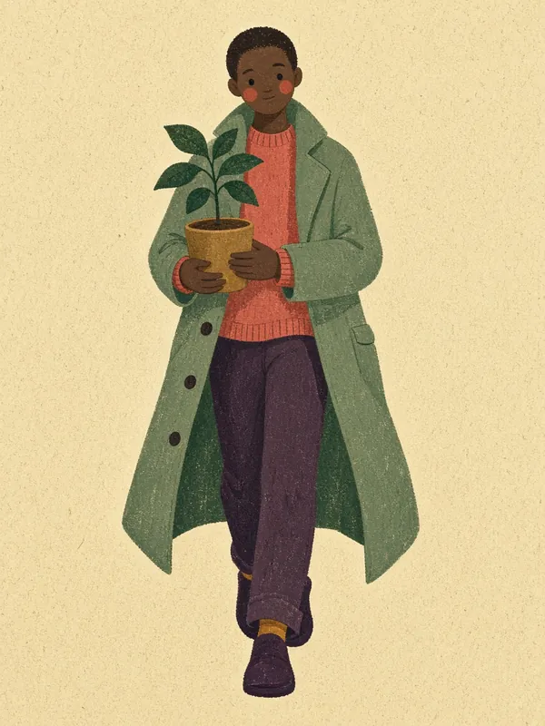
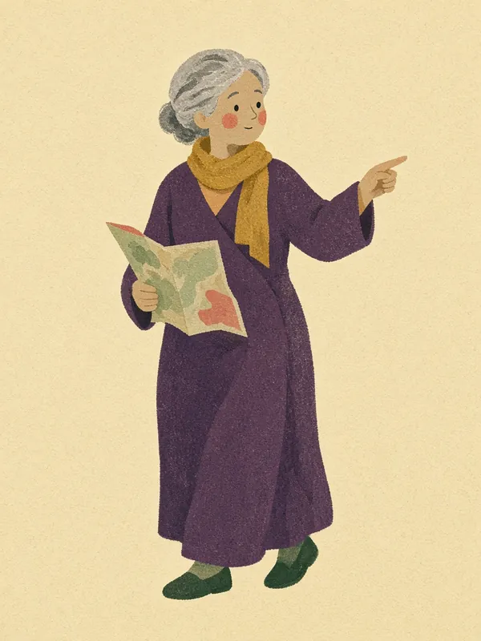
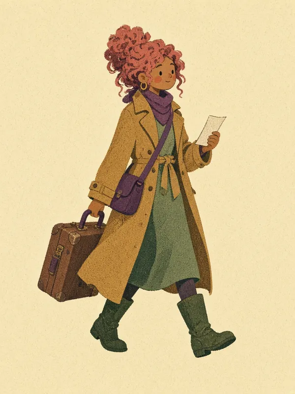
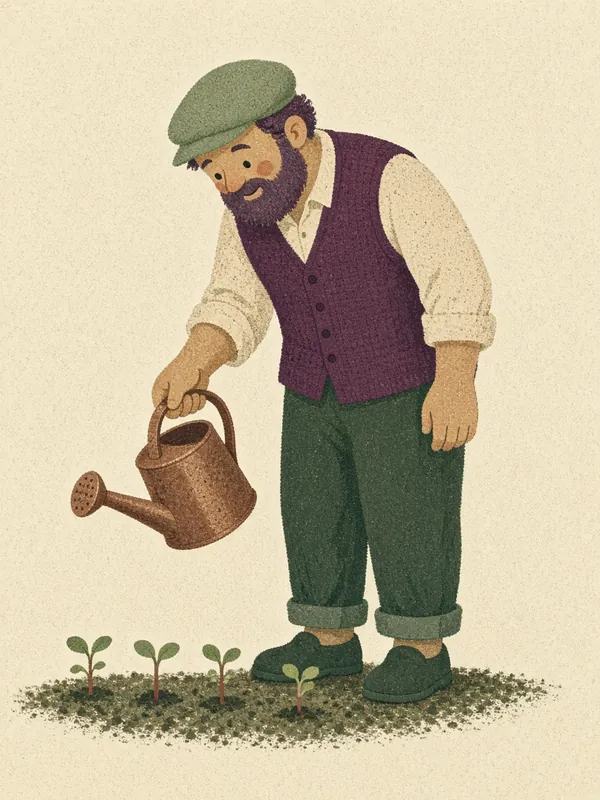
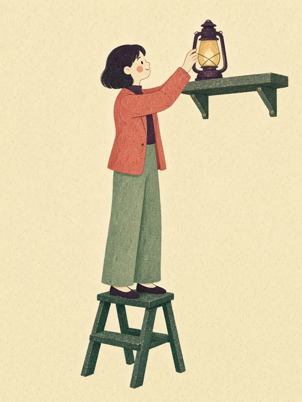
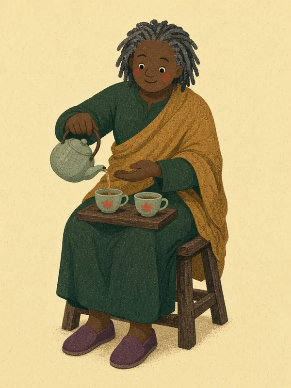

Seven original characters to pick from.
All are new, stylised figures drawn for this mockup in the site's grainy editorial style. Choose any you like and we can place them across the pages.

The founder
Long sage coat, coral jumper, carrying a young plant. Good for growth and "what we do".

The navigator
Silver hair, plum wrap dress, pointing the way with a map. Good for global reach and partnerships.
The analyst
Round glasses, deep green suit, charting a rising line on a pile of books. Good for underwriting and criteria.

The traveller
Ochre trench coat and suitcase, mid-stride. Good for offices and cross-border lending.

The gardener
Flat cap and plum vest, watering seedlings. Good for portfolio and long-term support.

The builder
Coral blazer, on a step stool placing a lantern. Good for scaling and infrastructure.

The host
Green tunic and ochre shawl, pouring two cups of tea. Good for connect and relationships.